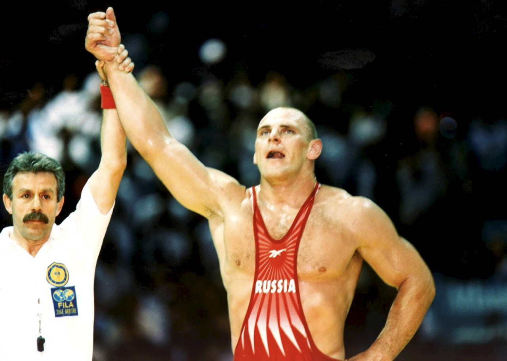
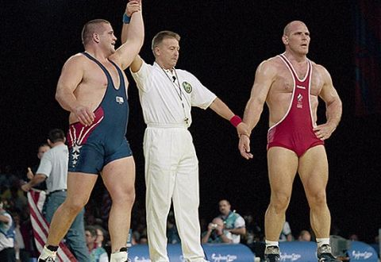

Прозвище: «Русский медведь»
Достижения:

Рекорд: первый мужчина с 4 олимпийскими золотами подряд (2008, 2012, 2016, 2020).
Мастер партера и выносливости. Его стиль — мощные броски и контроль в стойке.
Сенсация Олимпиады-2000: победил непобедимого Карелина в финале. Вырос на ферме, начал бороться поздно, но стал символом упорства.

Эти атлеты не просто выигрывали — они вдохновляли поколения, показывая, что сила, техника и воля могут творить историю.